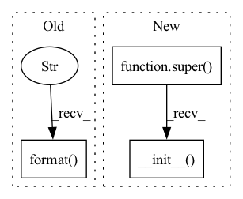

Pattern ID :34527

Before Change
load_dir="",
action_noise_scale = 0.1,
**kwargs):
warnings.warn("redundant arguments for trainer: {}".format(kwargs))
self.agent = agent
self.buffer = buffer
self.env = env
After Change
update_interval,
action_noise_scale,
**kwargs):
super(DDPGTrainer, self).__init__(agent, train_env, eval_env, **kwargs)
self.buffer = buffer
//hyperparameters
self.action_upper_bound = train_env.action_space.high[0]
self.action_lower_bound = train_env.action_space.low[0]
In pattern: SUPERPATTERN
Frequency: 4
Non-data size: 3
Instances
Fragment ID: 99317784
Project Name: x35f/unstable_baselines
Commit Name: d2b700132b90d1d604cf8821a292cc4d05a44648
Time: 2022-01-13
Author: xufeng@lamda.nju.edu.cn
File Name: unstable_baselines/baselines/ddpg/trainer.py
M Class Name: DDPGTrainer
N Class Name: DDPGTrainer
M Method Name: __init__(12)
N Method Name: __init__(18)
M Parent Class: BaseTrainer
N Parent Class: BaseTrainer
M File Name: unstable_baselines/baselines/ddpg/trainer.py
N File Name: unstable_baselines/baselines/ddpg/trainer.py
M Start Line: 12
M End Line: 45
N Start Line: 9
N End Line: 23
'>
Before Change
def __init__(self, dataset, split="training"):
self.cfg = dataset.cfg
path_list = dataset.get_split_list(split)
log.info("Found {} pointclouds for {}".format(len(path_list), split))
self.path_list = path_list
self.split = split
After Change
class ParisLille3DSplit(BaseDatasetSplit):
def __init__(self, dataset, split="training"):
super().__init__(dataset, split=split)
def __len__(self):
return len(self.path_list)
'>
Fragment ID: 99317783
Project Name: isl-org/open3d-ml
Commit Name: 8abb32e53389f4fe268f68df0941447e062440f2
Time: 2020-11-12
Author: 49262224+YilingQiao@users.noreply.github.com
File Name: ml3d/datasets/parislille3d.py
M Class Name: ParisLille3DSplit
N Class Name: ParisLille3DSplit
M Method Name: __init__(3)
N Method Name: __init__(3)
M Parent Class: BaseDatasetSplit
N Parent Class:
M File Name: ml3d/datasets/parislille3d.py
N File Name: ml3d/datasets/parislille3d.py
M Start Line: 139
M End Line: 145
N Start Line: 134
N End Line: 134
'>
Before Change
load_dir="",
action_noise_scale = 0.1,
**kwargs):
warnings.warn("redundant arguments for trainer: {}".format(kwargs))
self.agent = agent
self.buffer = buffer
self.env = env
After Change
load_dir="",
action_noise_scale = 0.1,
**kwargs):
super(TD3Trainer, self).__init__(agent, train_env, eval_env, **kwargs)
self.agent = agent
self.buffer = buffer
//hyperparameters
self.action_upper_bound = train_env.action_space.high[0]
'>
Fragment ID: 99317781
Project Name: x35f/unstable_baselines
Commit Name: d2b700132b90d1d604cf8821a292cc4d05a44648
Time: 2022-01-13
Author: xufeng@lamda.nju.edu.cn
File Name: unstable_baselines/baselines/td3/trainer.py
M Class Name: TD3Trainer
N Class Name: TD3Trainer
M Method Name: __init__(13)
N Method Name: __init__(19)
M Parent Class: BaseTrainer
N Parent Class: BaseTrainer
M File Name: unstable_baselines/baselines/td3/trainer.py
N File Name: unstable_baselines/baselines/td3/trainer.py
M Start Line: 12
M End Line: 47
N Start Line: 12
N End Line: 30